Recommendations
Setting wood and sensor properties
Wood and sensor properties can significantly affect the estimation of sap flow metrics and should be handled with care. The first step is to manually calculate the position of the first and last thermometer. After providing the values to the SFA, carefully compare your estimate with the estimates provided in the table in Settings > Measurement Environment. Below are two examples of how this can be done.
Example 1: all thermometers are in the stem
Data set example: mangrove, thermometer position 1 The tree had a diameter of 25.2 cm, the bark was removed, and the sensor was placed with 11 mm distance from the stem. The sensor had 20 mm distance between needle head and the first thermometer and 10 mm distance between each of the 8 thermometers. The first (i.e., outermost) and last (i.e., innermost) thermometers are 11.7 cm and 4.7 cm from the center of the stem, respectively. The figure describes how these measurements are derived.
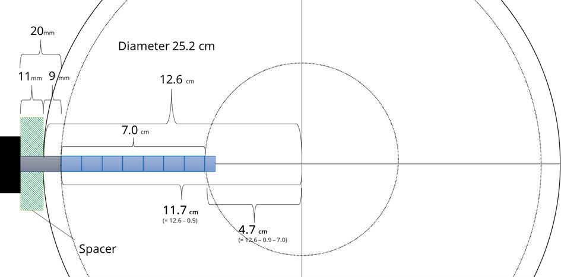
This information requires the following inputs in the SFA:
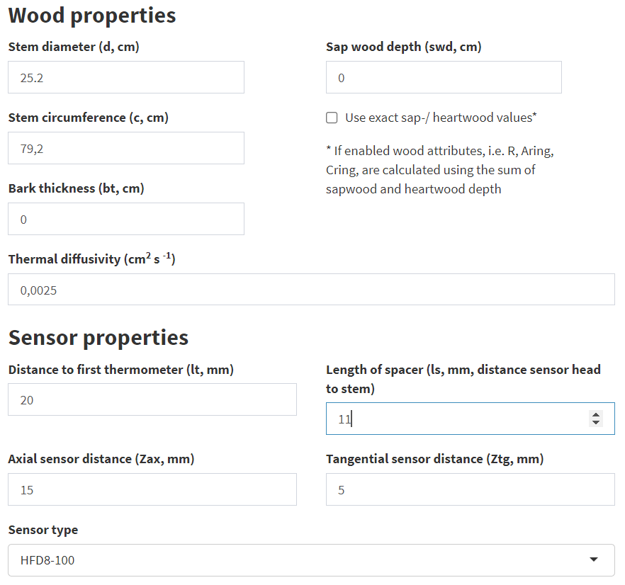
The Sensor Type drop-down menu allows you to enter specific sensor configurations, such as different distances between thermometers. If the inputs are correct, the distances for the outermost and innermost thermometers in the table at the bottom of the Measurement Environment box should match the previously calculated values.
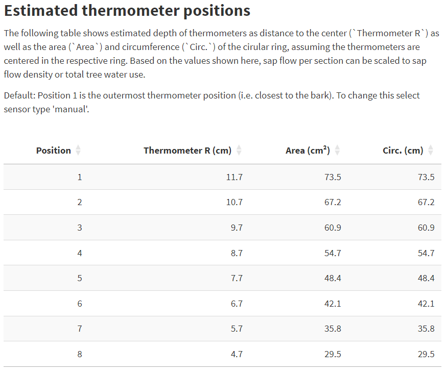
Example 2: some thermometers are outside the stem
Assuming the wood and sensor properties from above but a spacer length of 25 mm leads to a specific case, where the first (outermost) thermometer is located outside the stem. The distance between the center of the stem and this thermometer is 13.1 cm, which is larger the stem radius of 12.6 cm. The first thermometer inside the stem has a distance of 12.1 cm to the center and the last (innermost) of 6.1 cm.
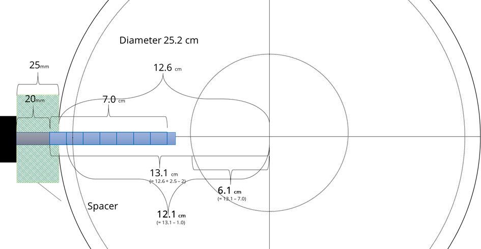
If all entries are made correctly the table in the SFA looks like this:
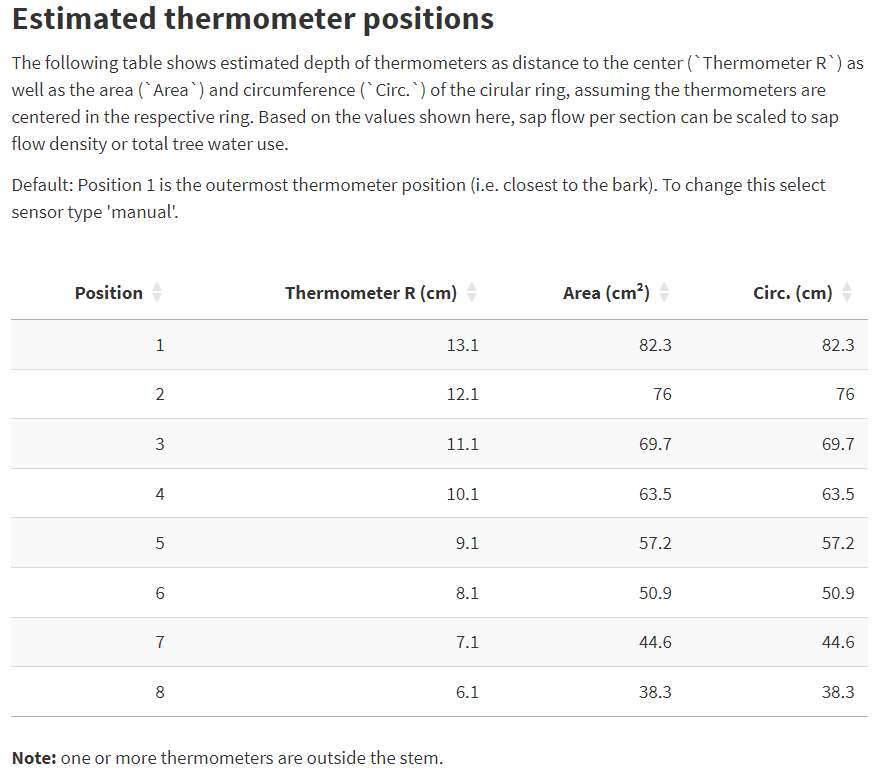
Because a thermometer is outside the stem, a warning appears below the table. In this case, the thermometer should be removed from the data set. This can be done in Data > Filter > Filter Options by specifying which thermometers should be used for further analysis.
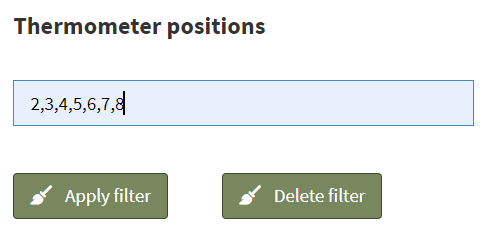
Note that this is a rare case. In the case of small stems with radii less than the needle length, the sensors can be fully inserted to obtain even two radial profiles (i.e., from the opposite side of the installation).
Estimating K
Case 1: No-flow records exist
A) Typical K diagram pattern
- In this example data set, the K diagram shows a clear pattern as described, for example, in Nadezhdina 2018, including no-flow records. That is, the temperature differences (dTas, dTsa and dTSym) cross the y-axis.
- Here, K estimation method “no-flow median” can be used.
- The left figure below shows the typical pattern observed in K diagrams. The red star in the left figure indicates the K value.
- Control plot 1 (right figure) confirms the fitness of the estimate, as the green (dTSym) and yellow (K+dTsa) data points intersect at the origin.
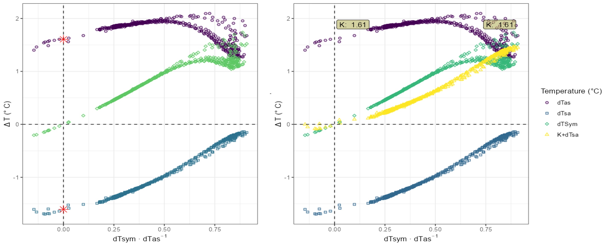
B) Atypical K diagram pattern
- In this example data set, the K diagram does not show a distinct pattern and the intersection of the data points with the y-axis is not clear.
- In this case, many data points exist around the y-axis (for dTsym/dTas close to 0).
- Using the no-flow median method can lead to over- or underestimation of K. This method takes the value closest to the y-axis and, if there are multiple values, calculates the median.
- The figure below shows that the no-flow median method underestimates K for this data set. This is illustrated by the K control plot 1, where the yellow point cloud does not pass through the origin as it should.
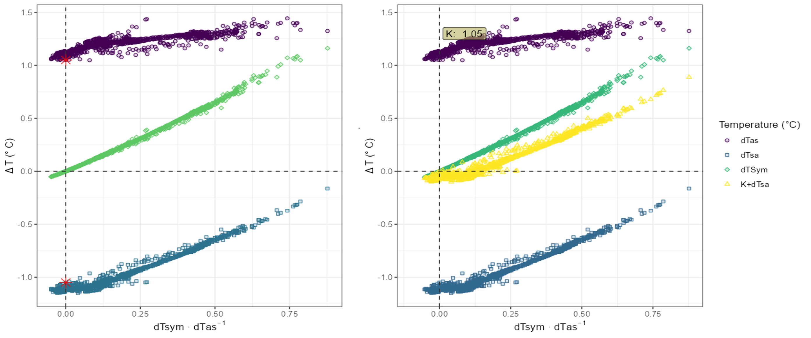
- In such cases, it is advised to check the no-flow regression method.
- In the figure below, the no-flow regression is applied with the time filter set to 10 pm to 6 am.
- The control plot 1 confirms that the estimate of K = 1.12 is better than K = 1.05 obtained with no-flow median.
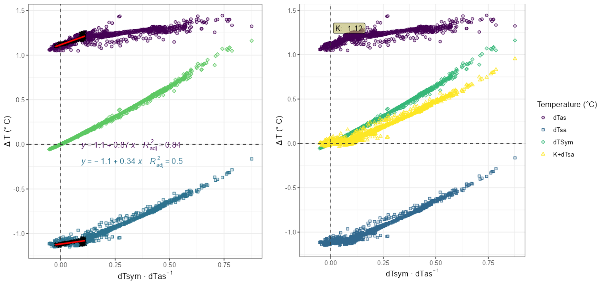
- Estimation of K can be aided by zooming the K plot and control plots. This is done by selecting a fixed scale and entering the range of data to be displayed on the x-axis.
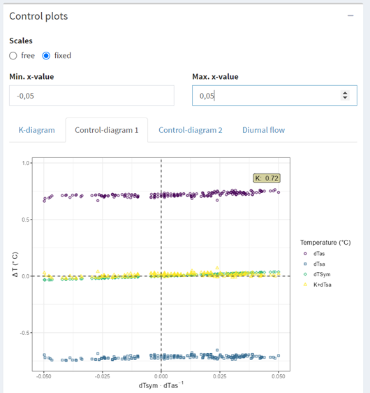
Case 2: Absence of no-flow records
It is recommended that conditions leading to no-flow records be artificially created in the field (see Experiments for details). If this is not possible, K must be approximated, but all estimates must be treated with caution. This is only recommended for users with experience in HFD data analysis.
- In this example, the dataset contains no-flow records that occurred during 1 day in a 5-days measuring period (foggy and drizzling day)
- To demonstrate the difficulty of estimating K in the absence of no-flow records, the data set was split into one set that included the wet day and one set that did not and therefore had no no-flow records (“dry conditions”).
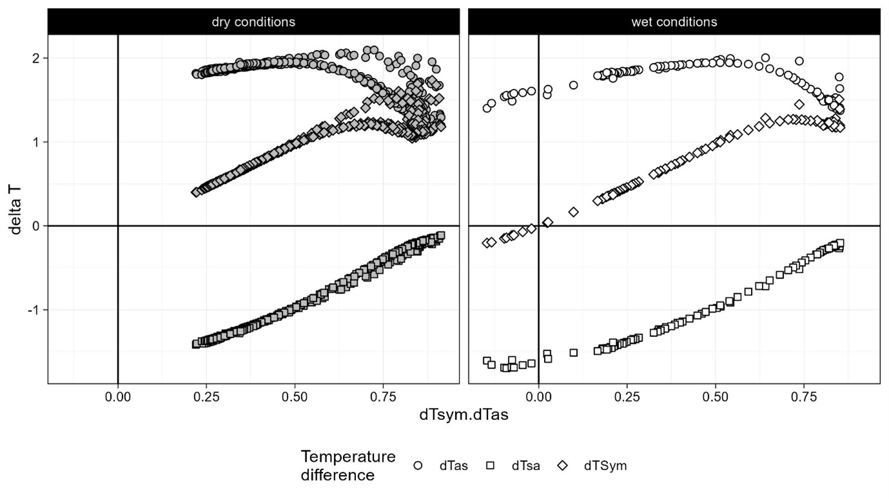
- In the case of absent no-flow records, it is recommended to use no-flow regression including filter options to optimize the regression.
- Without any filter adjustments, the regression results in an estimate of K=1.77.
- Without data points near the y-axis, control plots also become difficult to use. However, for regression, it is recommended to use the downward portion of the dTas point cloud. In this case, a steeper regression line for dTas is expected to result in a better estimate of K.
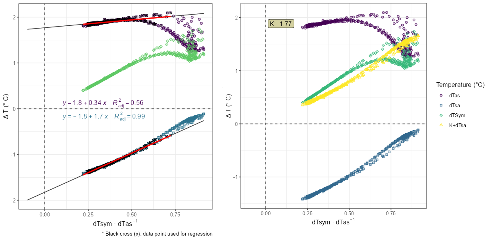
- To optimize the regression, select values with as close to no-flow conditions as possible. The “diurnal flow” diagram helps to identify the time period with the lowest flow. In this example, sap flow is lowest between midnight and 10 am. Applying this to the filter, reduces K to 1.69.
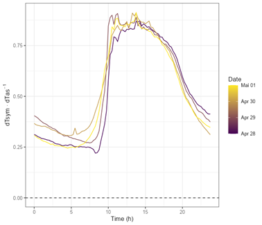
- The selection of data points used for the regression can be further refined by defining a maximum value for the ratio dTsym:dTas
- The left diagram below shows the regression with the time filter, while the right diagram shows the regression when a maximum value for the ratio dTsym:dTas (i.e., 0.35) is defined. Both yield to similar K values, i.e., 1.69 and 1.71, respectively.
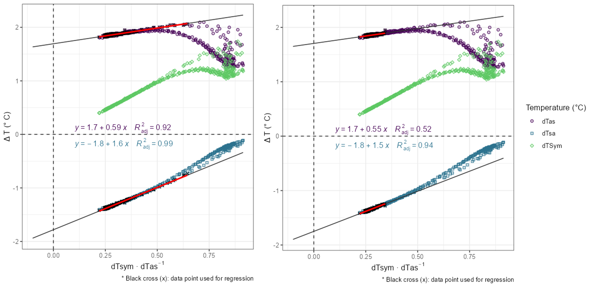
- Decreasing the maximum ratio dTsym:dTas would further decrease K in this example. When the threshold is set to 0.25, K is 1.61 but with a low coefficient of determination as only few data points are left for the regression.
- The following figure shows the estimates for K when applying different thresholds for dTsym:dTas.
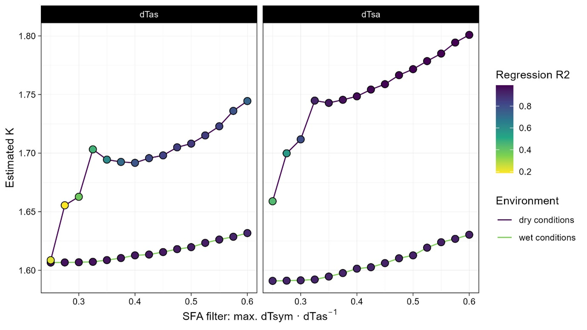 - Using the complete data set, i.e., including the no-flow records obtained with the irrigation experiment, shows that K is ~1.61. This value could only be reached by setting the maximum ratio dTSym:dTas as low as possible.
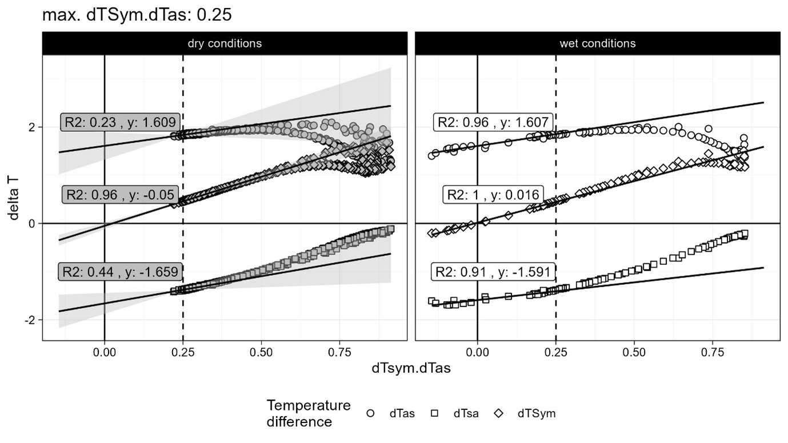
- Applying this strategy to all thermometer positions, results in the following estimates of K. For 3 thermometers, K is overestimated in the absence of no-flow records.
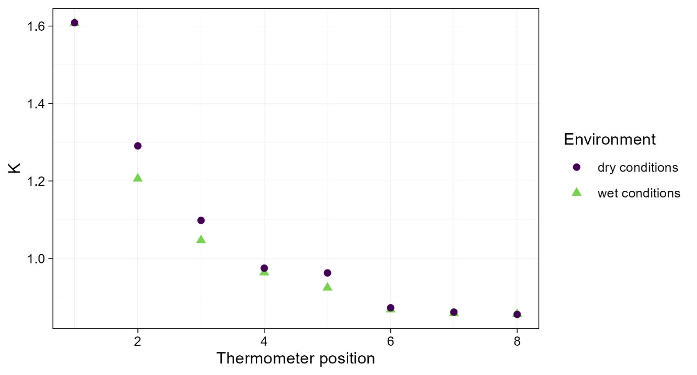
- The higher estimate for K result in an overestimation of daily TWU between 7.7 and 8.7 %.
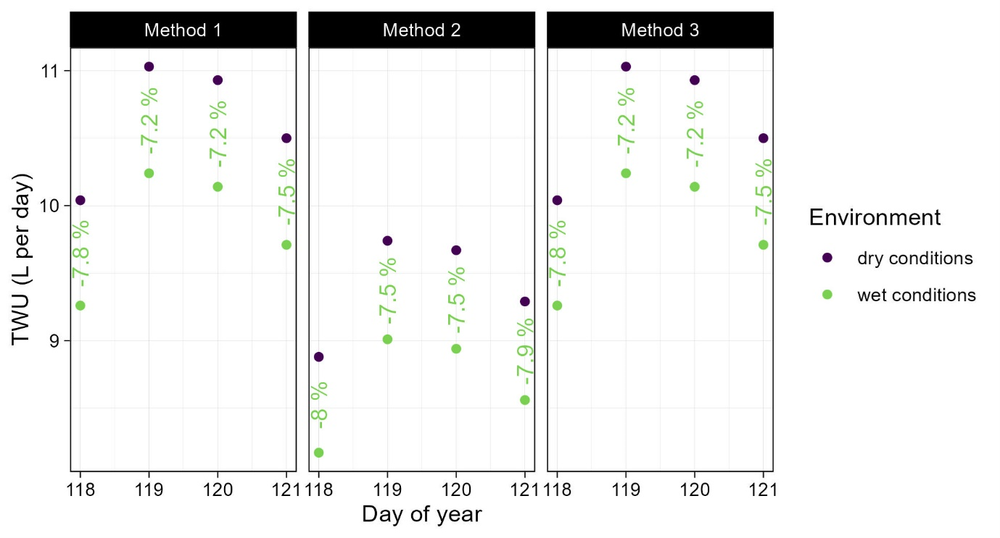
- As the flow rate in the second thermometer position is relatively high, the uncertainty of this K estimate has a high impact.
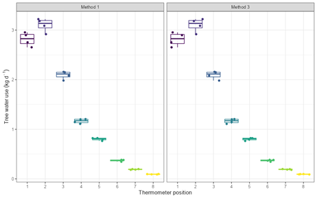
Experiments
In the absence of no-flow records and if it is not possible to wait until such conditions occur (e.g., rain, fog or dew), it is advised to trigger no-flow or reverse flow conditions with experiments (Nadezhdina, 2018, p.125). Such experiments are: - artificial fog by crown microsprinkling - localized irrigation at the opposite side of sensor installation - cuttings bellow (for aboveground organs) or above (for roots) the measuring point to create zero driving force. The latter suits for short-term experiments and can be done at their end.
Case 3: instability of K
See Nadezhdina (2018, page 125f.) for detailed examples - K is usually stable over long periods of time. - However, if it changes, there may be several reasons + External influences: insufficient isolation of sensor and measuring point, power fluctuations, … + Internal influences: tissue drying, … - External influences should be avoided at the outset. However, observing the instability of K can help to identify the occurrence of such conditions. - Internal influences to not depend on the measuring setup. In such cases, several K values must be estimated for the same thermometer position. This is not directly integrated in the SFA, but can be achieved by using the visualization and filter options (‘Data’ menu) in the SFA. - For example, the change of dTas over time can be visualized with the following settings
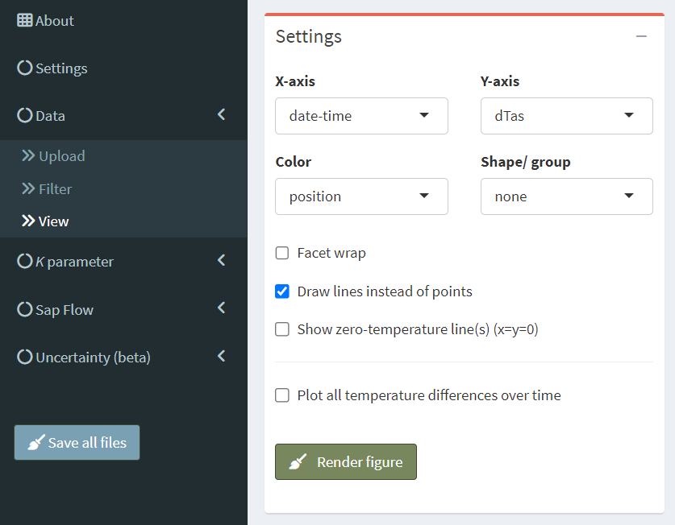
- Or, alternatively, as in the following figure. Such a visualization can help to identify shifts in nighttime maxima.
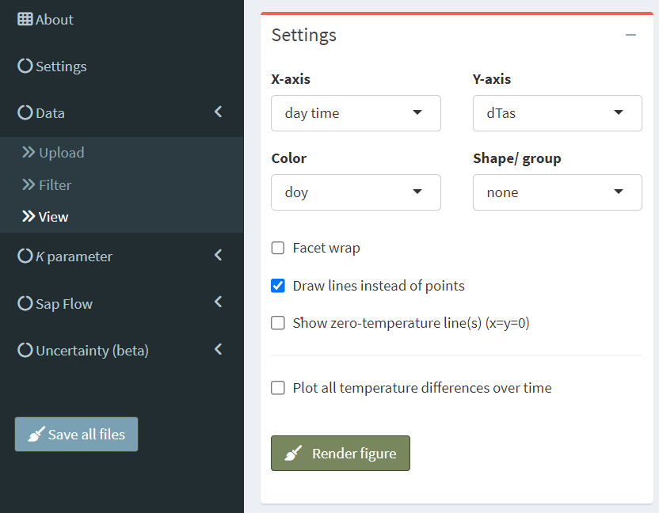
- If sudden shifts are detected, the data set can be divided using the ‘Filter’ section.